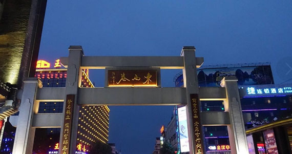
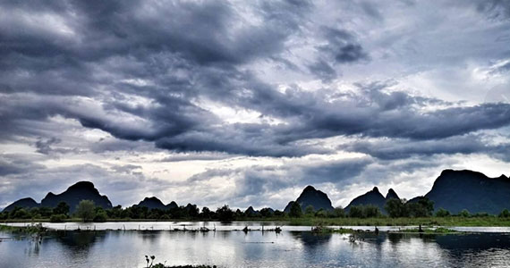
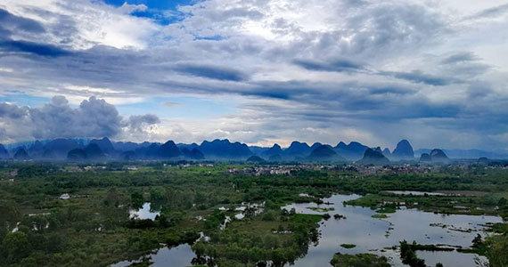

桂林东西巷
 东西巷是桂林明清时代遗留下的唯一的一片历史街巷，空间尺度宜人，是桂林古历史风貌的观景区，包含了正阳街东巷、江南巷、兰井巷等桂林传统街巷。体现了桂林的历史文脉。桂林会仙湿地
 会仙湿地被誉为“漓江之肾”，是漓江流域最大的喀斯特地貌原生态湿地，具有保持水源、净化水质、蓄洪抗旱、维护生物多样性等重要的环境调节功能和生态效益。湿地内岛屿星罗棋布，山水相得益彰，集“山、水、田、园、林、沼、运”等景观要素于一体，以其岩溶湿地之典型、山水景观之秀丽、历史文化之深蕴而著称。该湿地风貌及其周边环境不仅在广西是独一无二的，在全国乃至全球峰林岩溶平原风貌中也极为罕见，是极具研究价值的典型湿地。古桂柳运河
 古桂柳运河又称桂柳运河、桂柳古运河、相思埭，开凿于唐代长寿元年（692年），距今已有1300多年历史，与灵渠同为广西古代的两大运河。古桂柳运河穿过会仙湿地，河源于桂林市临桂区会仙镇狮子岩，汇分水塘，东流至相思江，入漓江；西流折入鲤鱼陡至永福洛清江汇柳江。千百年来，古桂柳运河曾经发挥航运和灌溉的重要作用。